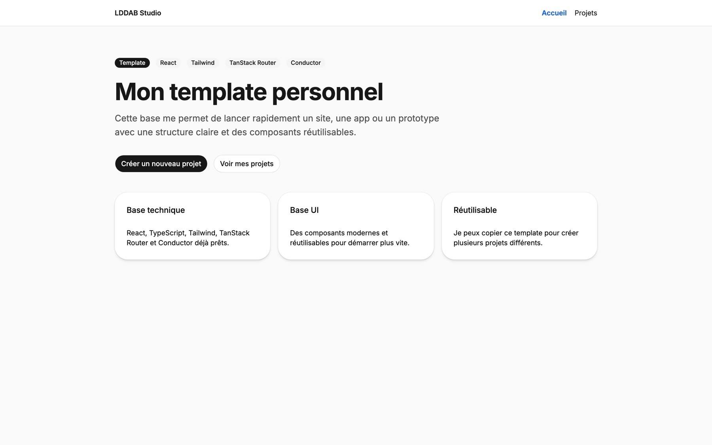
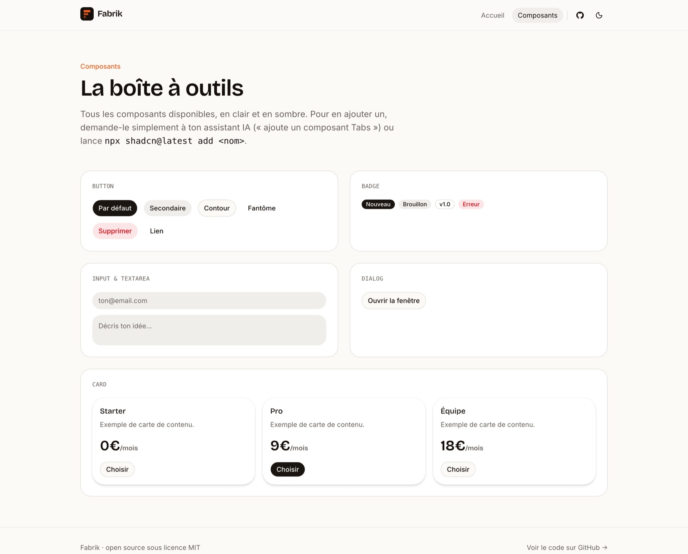
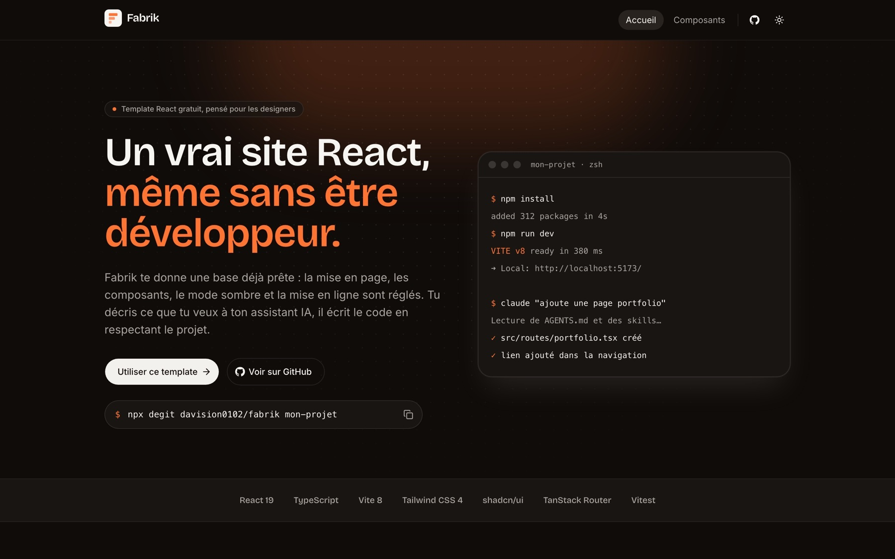

Fabrik: from my personal template to a shared tool.
A free React template to build a real website, even if you're not a developer. I first built it for myself, then rebuilt it from the ground up to share it as open source.
- Type
- Personal project, open source (MIT licence)
- Date
- November 2026
- Role
- Design, code and documentation, with an AI assistant
- Stack
- React 19, TypeScript, Vite 8, Tailwind CSS 4, shadcn/ui

Where it started
At BearStudio, we were constantly encouraged to try AI, stay curious and look at what others were doing. That's where I started building my own template, on the side.
I'm a designer, not a developer, and I wanted a foundation to go from mockup to a real website.
The first version was called LDDAB Studio, in a repository named DA-VISION. A ready-to-use React base that I cloned to start a site, an app or a prototype. I talk about it in my article UX/UI designer in the age of AI agents (in French).
What wasn't working
Looking at it with fresh eyes, V1 mostly looked like a personal draft:
- A meaningless home page: a title, two buttons that led nowhere and three generic cards.
- Filler content, like a “My projects” page with Project 1, 2 and 3, and copy written in the first person.
- Nothing to guide the AI: two instruction folders, each containing a single sentence.
- A fragile foundation: the build crashed because of an outdated option, the automatic check didn't check anything, and there were no tests.

On 13 November 2026, I decided to rebuild it from the ground up, with one clear goal: another designer should be able to use it without me.
An identity for a shared tool
A tool you share needs a name that isn't your own. LDDAB Studio became Fabrik, and the repository was renamed accordingly.
A “workshop” identity, evoking a place where things get made. The name and all the copy live in a single file, so anyone can rename the project in two minutes.

A real home page
The new home page explains at a glance what Fabrik is and how to get started. It has a real headline, a terminal showing how you work with AI, the install command to copy, the tools used, six features, three steps to get going and a final call to action.
The “My projects” page became a component showcase: buttons, fields, dialogs and cards, shown in light and dark mode, like a Figma library.

Mobile and dark mode
The site adapts to mobile, and dark mode has arrived, with no flash when the page loads.

AI-ready
This was the biggest piece. The idea: the assistant should understand the project instead of breaking everything.
- A user manual for the assistant: the
AGENTS.mdfile, read by Claude Code, Codex, Cursor or Copilot, explains how the project is organised and the rules to follow. - Eleven step-by-step guides, called skills: turning a Figma mockup into a page, doing a polish pass, adding a page, a form or a test, publishing the site, changing the identity. The assistant picks the right one on its own, depending on the request.
- The shadcn MCP server, so the assistant installs the right components.
You describe what you want to your AI assistant, and it writes the code while respecting the project.
For people who have never opened a terminal
I wrote the guide I wish I'd had when I started. The README walks you through step by step, from creating a GitHub account to going live, in about twenty minutes the first time.
It includes example requests to make to the assistant, an “If you get stuck” section and a small glossary: terminal, repository, commit, component, deploy… The words that scared me when I started.
A solid foundation
A shared tool has to be reliable. The build was fixed, and safeguards flag problems in the code before it goes live: automatic formatting, tests, a check on every change, and tracked dependency updates. Hosting is free, on GitHub Pages.
- Files changed
- 57
- Lines added
- ~1,450
- Tests (0 before)
- Passing
- Build
- < 1 s
What's next
Fabrik is live and open source. I use it for my own projects, and I keep improving it. I'm especially interested in feedback from designers and beginners.
View the demo The code on GitHub
For the backstory, about a designer discovering code with AI, read my article UX/UI designer in the age of AI agents (in French).
Open to a permanent role · Paris area
Your next Product Designer might just be me.
I'm looking for a team where I can design useful products, from the field all the way to code. Let's talk.